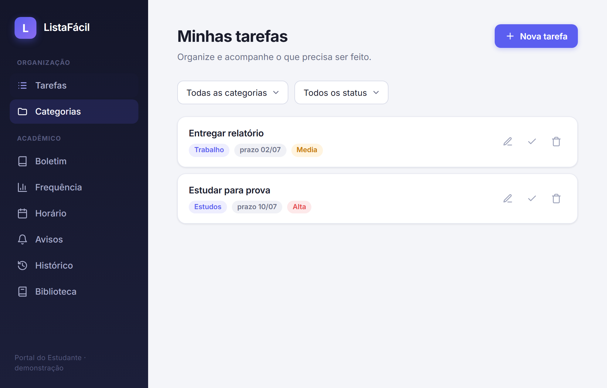
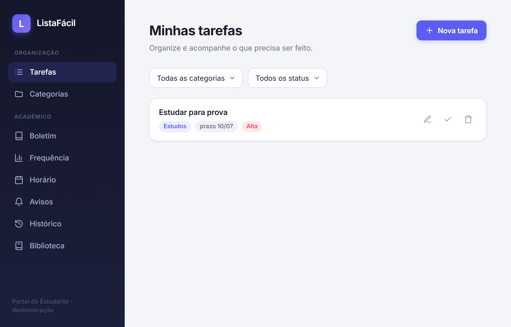
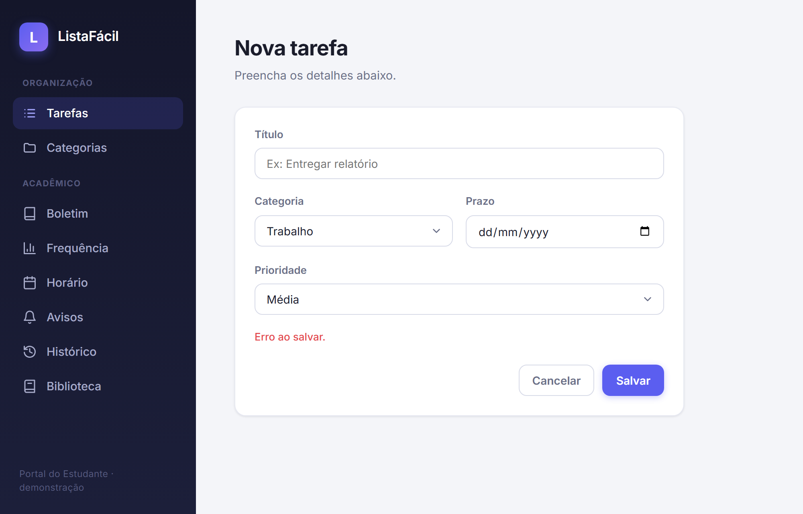
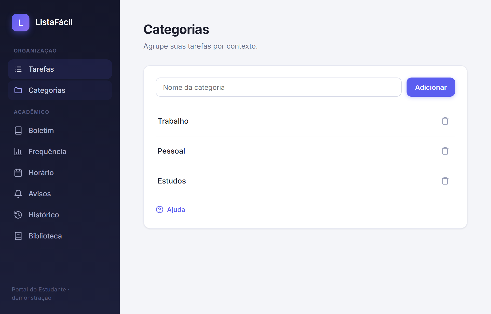
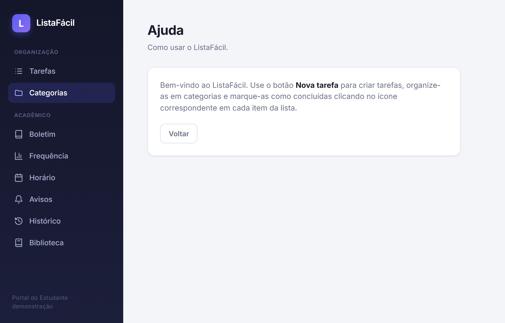

Este relatório apresenta a Parte 1 da avaliação de usabilidade do ListaFácil, um aplicativo web de gerenciamento de tarefas com módulos de apoio acadêmico (boletim, frequência, horário, entre outros). Assumindo o papel de Engenheiro de Usabilidade do próprio projeto, esta etapa cobre duas técnicas que não exigem a participação de usuários finais: o planejamento da avaliação por meio do framework conceitual DECIDE (Preece et al., 2005) e a Avaliação Heurística de Nielsen (1994), um método de inspeção.
A Parte 2 do trabalho (testes de usabilidade e entrevistas com usuários) e a triangulação final dos dados são executadas em etapa posterior; o planejamento dessas técnicas já está previsto na aplicação do DECIDE a seguir.
Framework conceitual de avaliação proposto por Preece et al. (2005), utilizado como referência no artigo "Avaliação de Interação de um Sistema de Gestão Acadêmica" (seção 3). Fornece uma checklist de seis etapas para planejar avaliações de IHC dirigidas por metas claras.
A avaliação do ListaFácil busca:
DD/MM) é interpretado corretamente pelos usuários?| Técnica | Paradigma | O que revela |
|---|---|---|
| Avaliação Heurística (inspeção) | Inspeção por especialista | Problemas estruturais de design, sem precisar de usuários |
| Teste de usabilidade (observação direta) | Observação | Problemas reais ao executar uma tarefa concreta |
| Entrevista semiestruturada | Investigação | Percepção subjetiva, expectativas e opiniões dos usuários |
Método: Avaliação Heurística de Nielsen (1994), com as 10 heurísticas, aplicado conforme o procedimento do material da disciplina: para cada tela × heurística, quando violada, registra-se localização (print), heurística violada, justificativa, gravidade (1 cosmético a 4 catastrófico) e sugestão de solução.
O enunciado prevê que "os dois membros da equipe" apliquem a avaliação. Como este trabalho é individual, a inspeção foi feita em duas passadas independentes, em momentos distintos, simulando dois avaliadores:
Os achados a seguir já estão consolidados (união dos dois, sem duplicatas; sem divergência de gravidade entre as passadas).
| Grau | Significado |
|---|---|
| 1 Cosmético | Não precisa ser corrigido a menos que sobre tempo |
| 2 Pequeno | Baixa prioridade |
| 3 Grande | Alta prioridade, muitos usuários ficarão insatisfeitos |
| 4 Catastrófico | Imperativo corrigir antes do lançamento |
Heurística violada: 3. Controle e liberdade do usuário.
Tela/local: Lista de tarefas, botão de excluir (ícone de lixeira).
Justificativa: a tarefa desaparece imediatamente ao clicar na lixeira, sem diálogo de confirmação nem opção de desfazer. Um clique acidental resulta em perda de dados permanente.
Sugestão: diálogo de confirmação ou, preferencialmente, uma notificação temporária "Tarefa excluída — Desfazer" por alguns segundos.


Heurística violada: 6. Reconhecimento em vez de memorização (relacionada também à 4, consistência e padronização).
Tela/local: Lista de tarefas, grupo de três ícones à direita de cada item.
Justificativa: os três ícones (editar, concluir, excluir) têm o mesmo tamanho, cor e peso visual, sem rótulos visíveis (apenas title, que não aparece em telas de toque). Editar (lápis) e concluir (check) ficam lado a lado e são fáceis de confundir num clique rápido.
Sugestão: diferenciar por cor (verde/azul/vermelho), aumentar o espaçamento e considerar rótulos curtos.

Heurística violada: 9. Ajudar a reconhecer, diagnosticar e recuperar de erros.
Tela/local: Tela "Nova tarefa", ao salvar com o campo Título vazio.
Justificativa: a mensagem é apenas "Erro ao salvar", sem indicar o campo incorreto nem como corrigir. O campo Título também não recebe destaque visual nem foco automático.
Sugestão: mensagem específica ("O campo Título é obrigatório") perto do campo, com borda vermelha e foco automático.

Heurística violada: 5. Prevenção de erros (e 1, visibilidade do estado).
Tela/local: Tela "Categorias", ao excluir uma categoria em uso.
Justificativa: ao excluir uma categoria, todas as tarefas associadas passam silenciosamente a "sem categoria", sem aviso prévio. O usuário pode só perceber depois.
Sugestão: diálogo de confirmação informando quantas tarefas serão afetadas ("3 tarefas ficarão sem categoria. Continuar?").

Heurística violada: 10. Ajuda e documentação.
Tela/local: só há um link "Ajuda" no rodapé da tela Categorias; nenhum acesso à ajuda a partir da tela principal.
Justificativa: um usuário que precise de ajuda na tela inicial (a mais usada) não tem pista de que a ajuda existe — é preciso navegar até uma tela secundária para descobri-la.
Sugestão: ícone/link de ajuda visível no cabeçalho, presente em todas as telas.

Heurística violada: 1. Visibilidade do estado do sistema.
Tela/local: Tela "Nova tarefa" → botão "Salvar".
Justificativa: ao salvar dados válidos, o sistema apenas volta à lista, sem nenhuma indicação (toast/mensagem/destaque) de sucesso. O usuário infere o sucesso só pela presença do item na lista (ver Figura 1).
Sugestão: notificação temporária "Tarefa salva com sucesso" ao retornar à lista.
Heurística violada: 2. Correspondência entre o sistema e o mundo real.
Tela/local: Lista de tarefas, campo "prazo" de cada item (ex.: "prazo 02/07", ver Figura 1).
Justificativa: a data aparece só como DD/MM, sem ano nem indicação textual, gerando ambiguidade (sobretudo para quem usa MM/DD) e sem deixar claro se o prazo já passou.
Sugestão: exibir a data por extenso ou em formato inequívoco ("2 de julho" ou "02/07/2026") e destacar prazos vencidos.
| # | Problema | Heurística | Gravidade |
|---|---|---|---|
| 1 | Exclusão sem confirmação | Controle e liberdade do usuário | 3 |
| 2 | Ícones editar/concluir parecidos | Reconhecimento em vez de memorização | 3 |
| 3 | Erro genérico ao salvar | Ajuda a reconhecer/diagnosticar erros | 2 |
| 4 | Exclusão de categoria sem aviso | Prevenção de erros | 3 |
| 5 | Ajuda de difícil acesso | Ajuda e documentação | 2 |
| 6 | Sem feedback ao salvar | Visibilidade do estado do sistema | 2 |
| 7 | Formato de data ambíguo | Correspondência com o mundo real | 1 |
Pontos positivos observados: a navegação principal (Tarefas/Categorias) é simples e consistente; os filtros de categoria e status funcionam de forma previsível; o formulário de nova tarefa é curto e objetivo.